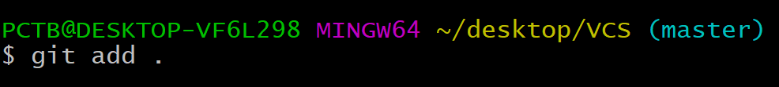
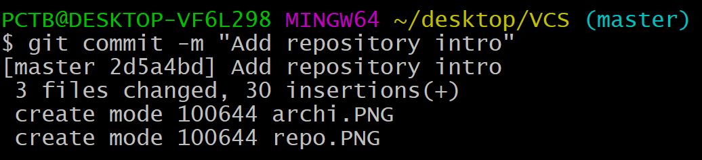
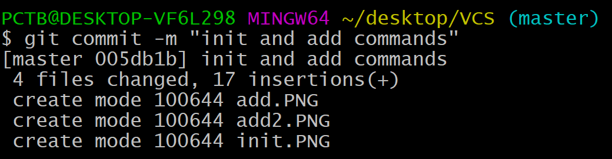
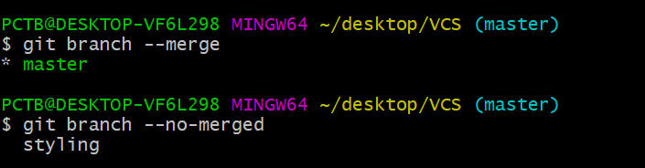
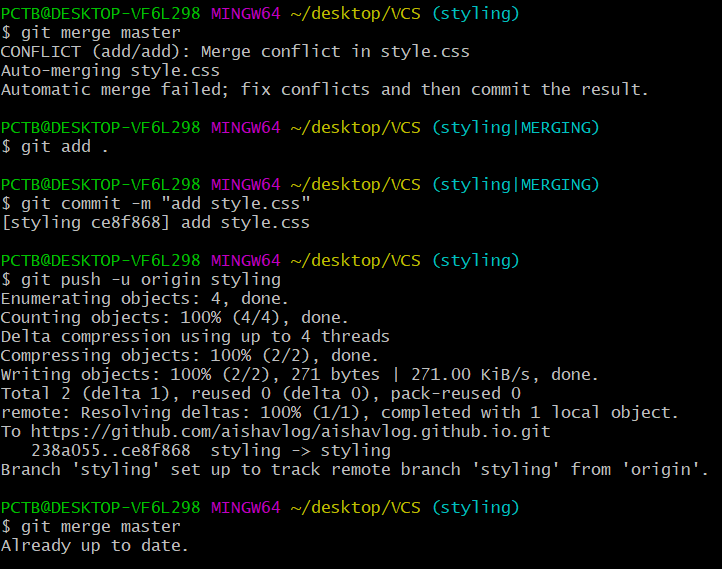

A version control system, or VCS, tracks the history of changes as people and teams collaborate on projects together. As the project evolves, teams can run tests, fix bugs, and contribute new code with the confidence that any version can be recovered at any time. Developers can review project history to find out:
- Which changes were made?
- Who made the changes?
- When were the changes made?
A repository, or Git project, encompasses the entire collection of files and folders associated with a project, along with each file’s revision history. The file history appears as snapshots in time called commits, and the commits exist as a linked-list relationship, and can be organized into multiple lines of development called branches. Because Git is a DVCS, repositories are self-contained units and anyone who owns a copy of the repository can access the entire codebase and its history. Using the command line or other ease-of-use interfaces, a git repository also allows for:
- interaction with the history
- cloning
- creating branches
- committing
- merging
- comparing changes across versions of code
SETUP
set a name that is identifiable for credit when review version history
git config --global user.name “[firstname lastname]”
set an email address that will be associated with each history marker
git config --global user.email “[valid-email]”
set automatic command line coloring for Git for easy reviewing
git config --global color.ui auto
git init
git init initialize an existing directory as a Git repository.
git init initializes a brand new Git repository and begins tracking an existing directory. It adds a hidden subfolder within the existing directory that houses the internal data structure required for version control.
git add
git add stages a change. Git tracks changes to a developer’s codebase, but it’s necessary to stage and take a snapshot of the changes to include them in the project’s history. This command performs staging, the first part of that two-step process. Any changes that are staged will become a part of the next snapshot and a part of the project’s history. Staging and committing separately gives developers complete control over the history of their project without changing how they code and work.
To add single file
To add all files

git commit
git commit saves the snapshot to the project history and completes the change-tracking process. In short, a commit functions like taking a photo. Anything that’s been staged with git add will become a part of the snapshot with git commit.


git status
git status shows the status of changes as untracked, modified, or staged.
After running add command
git clone [url]
git clone creates a local copy of a project that already exists remotely. The clone includes all the project’s files, history, and branches.
git remote
The git remote command lets you create, view, and delete connections to other repositories. Remote connections are more like bookmarks rather than direct links into other repositories. Instead of providing real-time access to another repository, they serve as convenient names that can be used to reference a not-so-convenient URL.
url of repository on your account
git push
git push updates the remote repository with any commits made locally to a branch.Here master is default branch.
After reloading the web repository
Note :
Every time we made changes in our site ,we have to repeat the process add -> commit ->push to repository.
After making changes
Repository view
git branch
git branch shows the branches being worked on locally. * shows current branch.
git branch (branch-name)
git brach branch-name creates new branch
git checkout (branch-name)
Switch to new branch.Now current branch is styling
Branches view in web repository

git merge (Branch name)
To check which branches are merged with master branch which not

Merge master and local branch(styling)

git log
Show history of commits
git branch -d (branch-name)
If we want to delete branch
Edit online